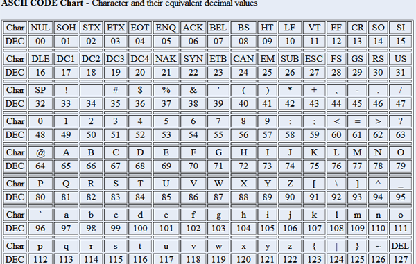

Capitolo 3
Vai alla pagina indice
Vai al Primo Paragrafo
Vai al Secondo Paragrafo
Vai al Terzo Paragrafo
Il Codice Ascii

ASCII (American Standard Code for Information Interchange), è uno standard di codifica
dei caratteri utilizzato nei computer e nei dispositivi elettronici per rappresentare
il testo.
Fu proposto nel 1963 e diventò definitivo nel 1968 e permette di codificare i caratteri
della tastiera a 7 bit.
è stata fatta anche un'estensione a 8 bit.
Il codice permette la rappresentazione numerica dei caratteri alfanumerici, della
punteggiatura e dei simboli.
Un testo salvato in ASCII è letto facilmente da qualsiasi Sistema Operativo o Programma,
in fatti il suo uso è a livello mondiale e ogni computer è in grado di riconoscerlo.
Vi fu poi una nuova codifica detta Unicod che venne introdotta nel 1991 per permettere
la codifica di altri simboli, come il greco e le cifre sono state estese a 265 ovvero 8 bit.
La codifica dei numeri
I numeri vengono codificati in 8 bit, sono codificati anche i numeri negativi e le codifiche
sono le seguenti.
|
Numero
|
Codifica
|
Numero negativo
|
Codifica
|
|
0
|
0000
|
"-0"
|
1000
|
|
1
|
0001
|
-1
|
1001
|
|
2
|
0010
|
-2
|
1010
|
|
3
|
0011
|
-3
|
1011
|
|
4
|
0100
|
-4
|
1100
|
|
5
|
0101
|
-5
|
1101
|
|
6
|
0110
|
-6
|
1110
|
|
7
|
0111
|
-7
|
1111
|
Per fare diventare negativo un numero basta solo cambiare la prima cifra.
I numeri naturali hanno la prima cifra binaria che è sempre 0, invece quelli negativi 1.
La codifica delle immagini
La codifica delle immagini dipende dai colori utilizzati dalla suddetta immagine.
La profondità è il numero di Bit utilizzati per i colori, più colori ci sono e più Bit ci sono
|
1 Bit
|
Bianco e Nero
|
|
8 Bit
|
Tonalità di Grigio
|
|
16 Bit
|
Radiografia
|
|
24 Bit
|
RGB
|
|
48 Bit
|
RGB ad alta qualità
|
La risoluzione dell'imagine è il risultato della moltiplicazione dei due lati del
rettangolo (in Pixel) e ci serve per calcolare quanto spazio ci occupa.
Il calcolo da fare è Profondità X Risoluzione.
8 Bit si chiamano 1 Byte, 16 Bit un Word, 32 Bit un Double Word, 64 Bit un Quad Word.
2°10 Byte sono un KiloByte, 2°10 KiloByte sono un MegaByte, 2°10 MegaByte un GigaByte e cosi
via...